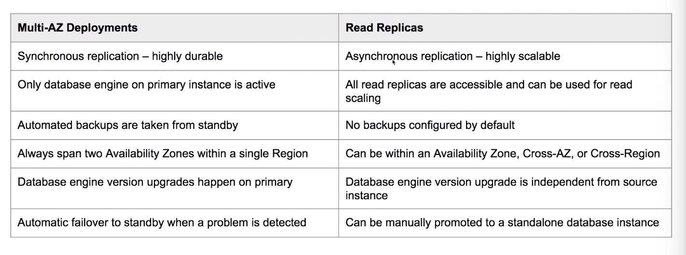

A managed relational database service.
You cannot SSH into the VM running the database.
Support multiple SQL engines, easy to scale, backup and secure.
6 relational database options:
- Oracle
- MySQL
- PostgreSQL
- MariaDB
- Amazon Aurora
- Microsoft SQL Server
RDS Encryption
You can turn on encryption at-rest for all RDS engines.
Encryption is handled using the AWS KMS.
RDS Backups
Two backup solutions available for RDS:
Automated Backups
Choose a retention period between 0 and 35 days
(For Aurora, 1 - 35 days. You cannot have backup turned off for Aurora)
0 days means the automated backups option is disabled
Stores transaction logs throughout the day
Automated backups are enabled by default
All data is stored inside S3
No additional charge for backup storage
You define you backup window
Storage I/O may be suspended during backup (not if you enable multi-AZ)
Manual Snapshots
You can manually create a snapshot of your database.
Backups persist even if you delete the original RDS instance.
No additional charges for all these backups
Restoring Backups
When recovering from backup, AWS will take the most recent daily backup, apply transaction log data relevant to that day.
This allows point-in-time recovery down to a second inside the retention period.
Backup data is never restored overtop of an existing instance: A new instance is created for the restored database.
Restored RDS instances will have a new DNS endpoint: you can then use the new DNS endpoint for your application.
Multi-AZ
Ensures database remains available if another AZ becomes unavailable.
AWS automatically synchronizes changes in the database over to the standby copy.
Always happen within the same region.
Automated backups are taken from standby.: with Multi-AZ enabled, automated backup will not cause suspension in I/O.
Only database engine on primary instance is active.
Automatic Failover Protection
If one AZ goes down, the failover will occur, and the standby slave will be promoted to master.
Read Replicas
Allow you to run multiple copies of your database.
You must have automated backups enabled to use Read Replicas.
These replicas only allows reads and is intended to alleviate the workload of your primary database to improve performance.
You must have automatic backups enabled to use Read Replicas.
You can have up to five replicas of a database. Each Read Replica will have its own DNS endpoint
You can have Multi-AZ replicas, replicas in another region, or even replicas of other replicas.
Replicas can be promoted to their own database, but this breaks the replication.
No automatic failover, if primary copy fails, you must manually update urls to point at a working copy.
Multi-AZ vs Read Replications

Migrate Snapshot
You can migrate to Amazon Aurora through the option “migrate snapshot”. This creates a new Aurora instance from your RDS snapshot.
Aurora Serverless
You have two options of setting up your Aurora:
- One writer and multiple readers: general purpose option for most workloads
- Serverless: when you have intermittent or unpredictable workloads
You can’t give an Aurora Serverless DB cluster a public IP address.
You can access an Aurora Serverless DB cluster only from within a virtual private cloud (VPC) based on the Amazon VPC service.
Each Aurora Serverless DB cluster requires two AWS PrivateLink endpoints.